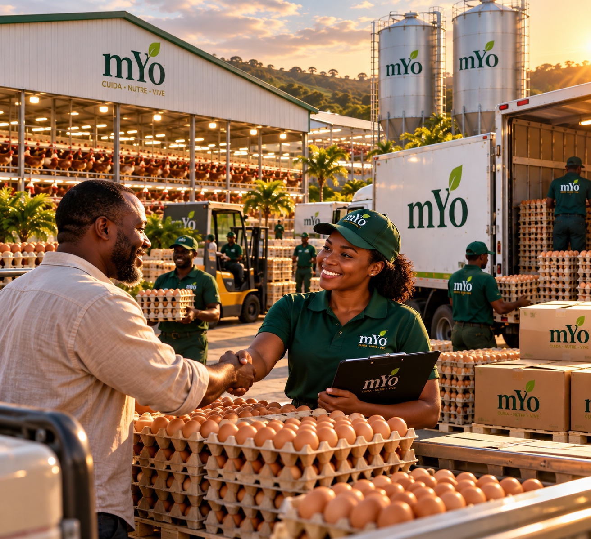
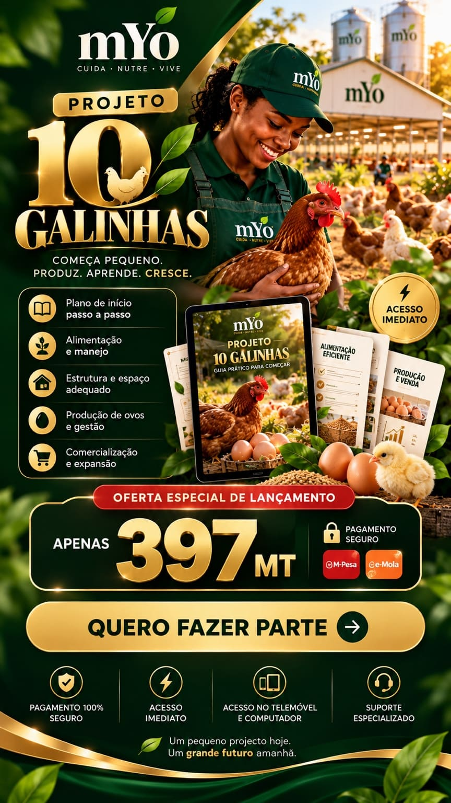

O começo de uma jornada
Começa pequeno.
Produz. Aprende. Cresce.
O Projeto 10 Galinhas apresenta uma forma prática de começar, organizar a produção e compreender cada etapa.
01COMEÇA
02CUIDA
03PRODUZ
04APRENDE
05CRESCE
A visão
Hoje são 10.
Amanhã pode ser muito mais.
Aprender primeiro, aplicar depois e evoluir com planeamento.

ACESSO AO PROJECTO
PROJETO 10 GALINHAS
Um guia prático para começar, organizar e desenvolver a tua produção.
397 MT
QUERO FAZER PARTE →✓ACESSO IMEDIATO
⚡ONLINE
🔒COMPRA SEGURA
Conhecimento que transforma. Pessoas que produzem o futuro.